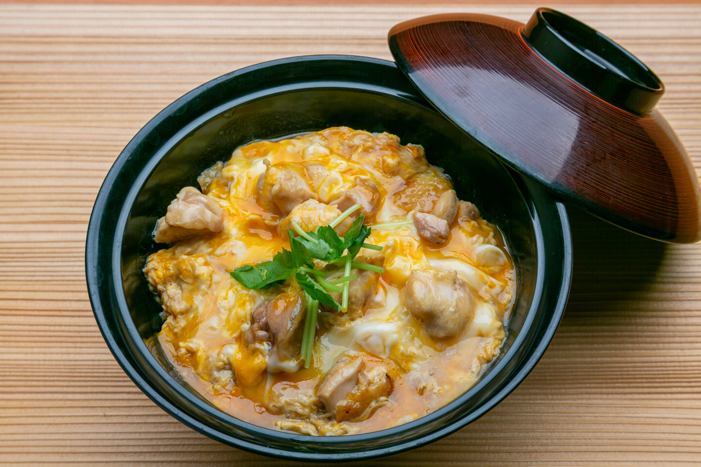

Oyakodon Recipe

Description
This Oyakodon recipe is a quick and easy way you can make an authentic Japanese dish at home. Oyakodon itself is a donburi, or Japanese rice bowl dish, in which chicken, egg, sliced scallion (or sometimes regular onions), and other ingredients are all simmered together in a kind of soup that is made with soy sauce and stock, and then served on top of a large bowl of rice.
Ingredients
- Chicken thighs
- Sake
- Onion
- Eggs
- Mitsuba
- Dashi
- Soy sauce
- Mirin
- Sugar
- Rice
Steps
- Prepare the ingredients: Cut the onion, green onions, and chicken and crack the eggs.
- Cook the onion in the seasonings.
- Add the chicken and cook until the chicken is no longer pink.
- Drizzle egg mixture at two separate times. Garnish the green onions on top.
- Spoon the finished dish over steamed rice.